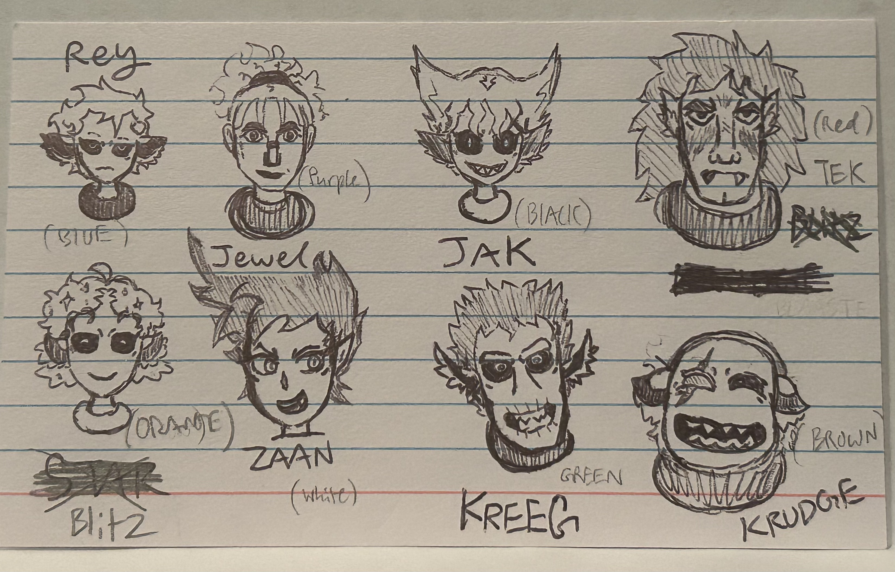
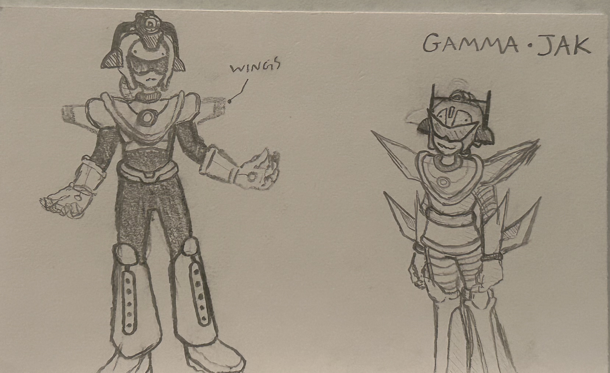
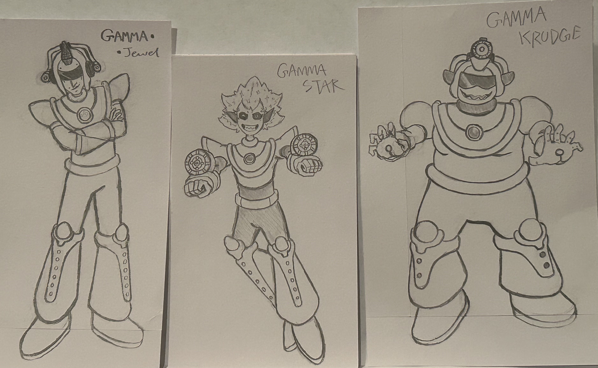
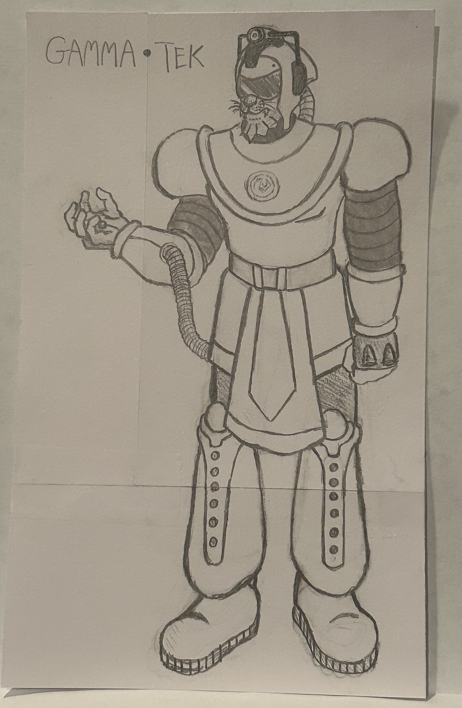
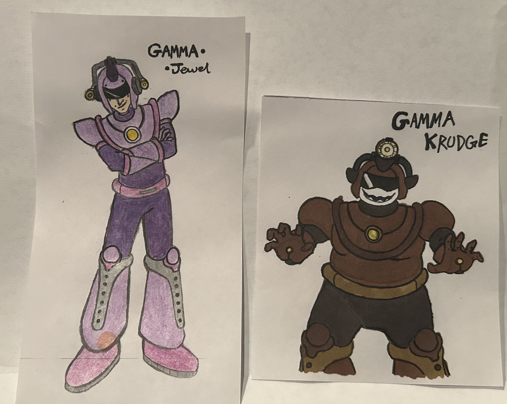
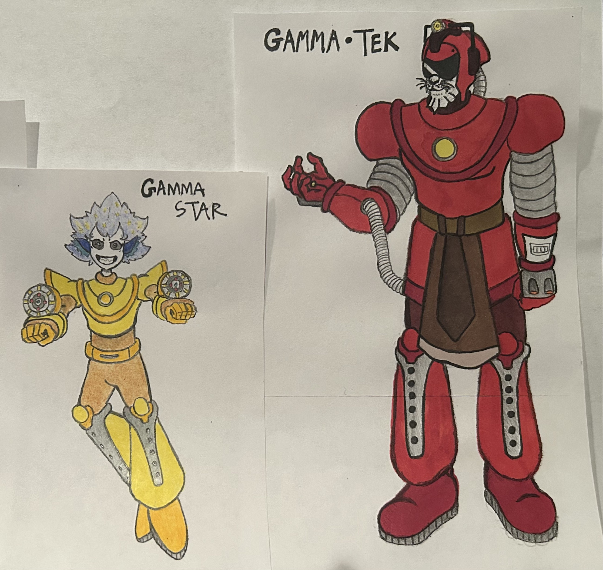

Personal Projects
The Egg-Buster
2026


“The Egg-Buster” is a sculpture assembled from various metal objects discovered in several thrift stores and secondhand shops. The piece combines recycled materials into a classic, industrial-style robot form that balances humor, experimentation, and texture. By repurposing discarded objects, the work explores transformation and creative reuse through sculpture.
Gamma Force Concept Art
Character Design & Worldbuilding
Rough Sketches




The “Gamma Force” series was inspired by several animated and science fiction properties including “Mega Man,” “My Hero Academia,” “Steven Universe,” “Doctor Who,” and “Invader Zim.” The very first character I designed was Gamma-Rey, originally imagined as a lone space ranger traveling through the galaxy. Over time, the idea evolved into an entire squadron of interstellar rogues known as the Gamma-Force. Most members of the team belong to a species I created called “Moon-Fish,” though several characters come from entirely different alien species and worlds. Each Gamma member is equipped with a top-of-the-line space suit that comes equipped with anti-gravity properties, magnetic pulse-emitting gloves, propulsion boots, and at least one photon cannon. Each Gamma excels in their respective fields, and each have their own suits catered to them: Gamma-Star has two photon cannons on her arms for better agility, Gamma-Jewel has two smaller beam-cannon variants beside her head, as opposed to the single cannon on top, and Gamma-Tek is equipped with a bulkier suit, and flame thrower hand attachments for clearing debris.
Colored Sketches


One other key feature that makes each Gamma unique is their color scheme. Each one is assigned their own unique color scheme, which makes them stand out more. These are just concepts I have though, and far from the finished look, as I may swap colors around in the future, but that's what's so fun about art-- you get to conceptualize and play around with many different ideas, which sometimes lead to even better ideas than were initially though of!